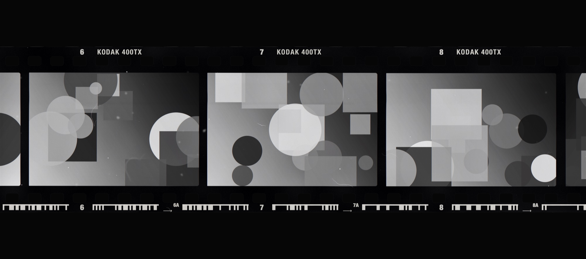
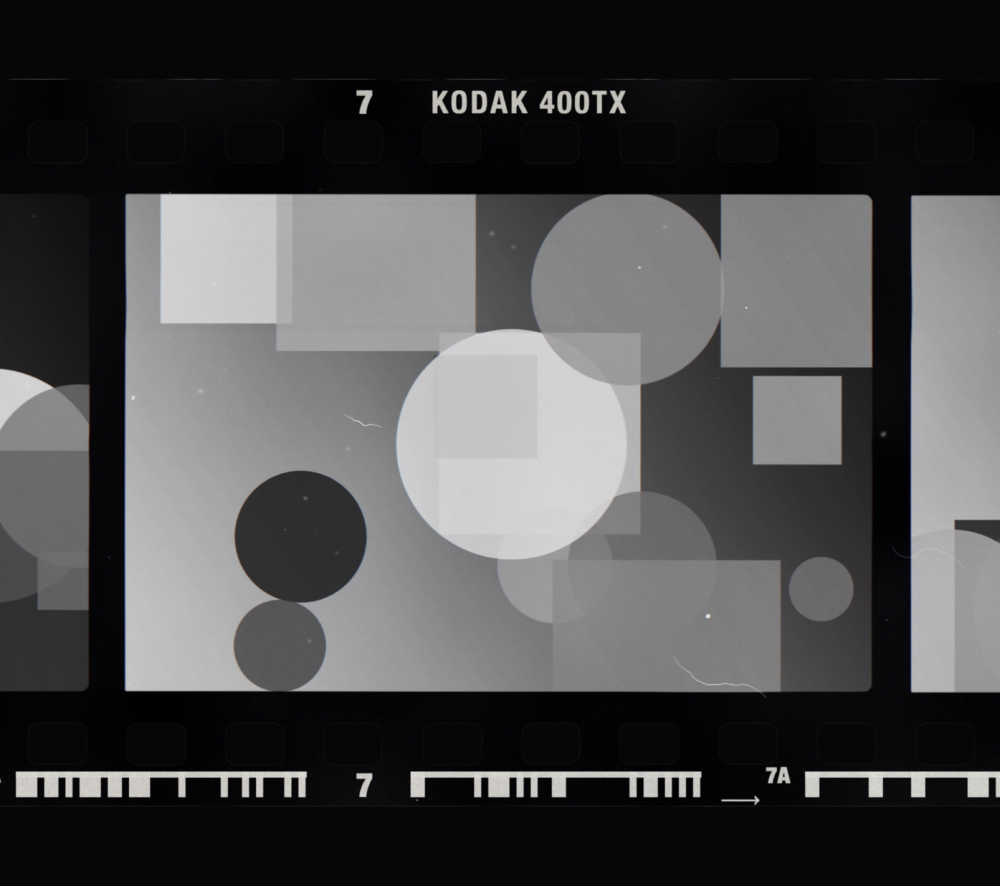
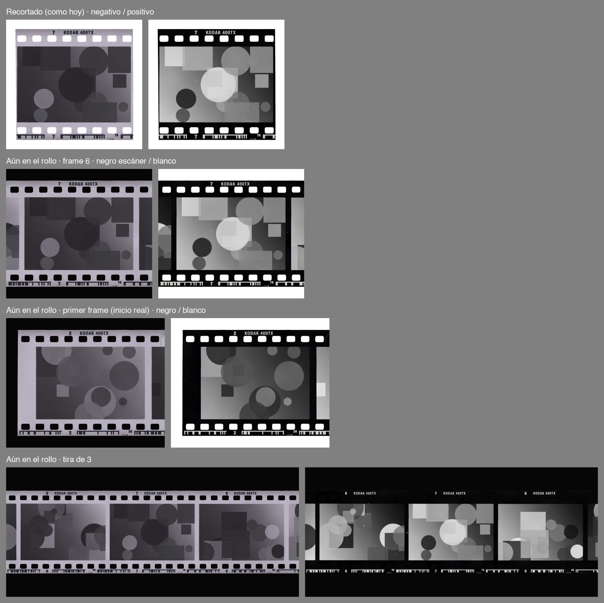

módulo06frames · export
Aún en el rollo.
Cada foto sale como el escaneo de su negativo. Nuevo: deja la película sin cortar y el cuadro sale como una ventana sobre el rollo.
01
Tira de 3, sin cortar
kodak 400tx · escáner · positivo
02
Un cuadro
cuadro 6 · escáner
puntas0
Sin cortes ni margen donde la película sigue.
vecinos12 %
De cada cuadro de al lado asoma un pedazo.
inclinación0°
Sin cortar, la tira queda plana en el vidrio.
salidatiff 16
O JPEG / PNG, a cualquier tamaño.
03
Antes y ahora
recortado · aún en el rollo
| modo | puntas | margen | en el escáner |
|---|---|---|---|
| centrado en el cuadro | cortadas | todo alrededor | inclinada, con arco |
| cortado como en el rollo | cortadas (1–3, 4–6…) | todo alrededor | inclinada, con arco |
| aún en el rollo | sin cortar | solo arriba y abajo | plana |